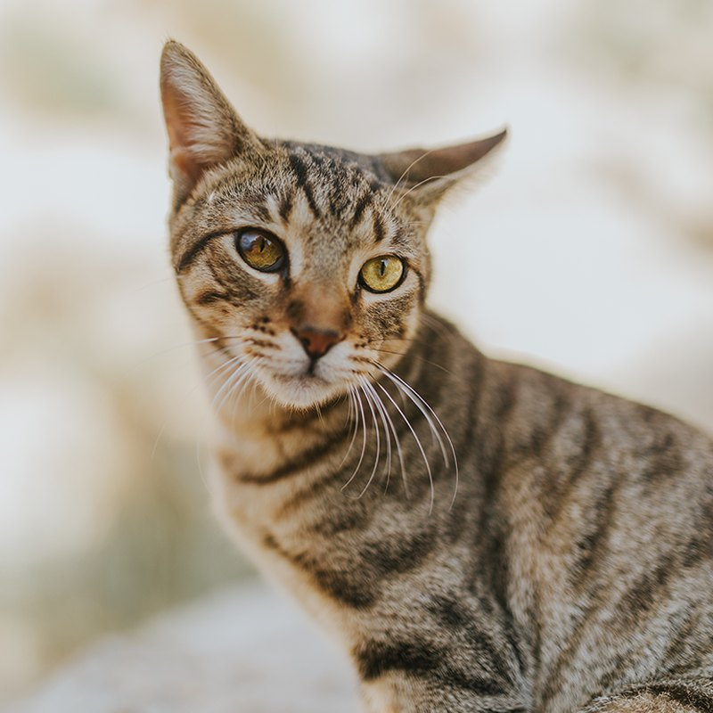
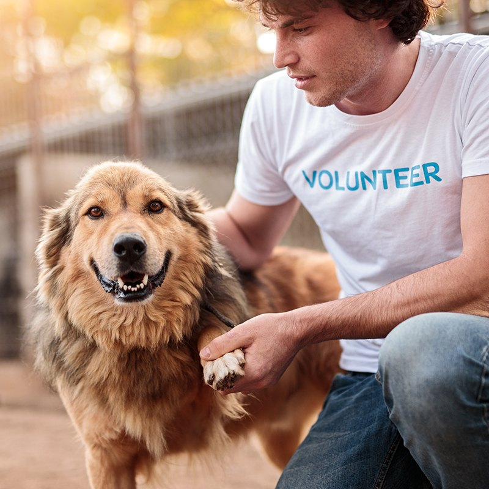

Animal care companion
Help with feeding, cleaning, and enrichment. Spend time with animals so they stay happy and social.
Commitment: one 3-hour shift per week.
Whether you are ready for a lifelong companion or just have a few free hours, there is a place for you here.
We want every match to last a lifetime. Our four steps keep things friendly, clear, and focused on what is best for the animal and for you.
Complete a short application telling us about your home, family, and the kind of companion you are hoping for.
Visit with animals who fit your lifestyle. Our adoption counselors are happy to answer every question.
Once you have found a connection, we review details together and finalize the adoption agreement and fee.
Take your new family member home with a starter kit and a follow-up check-in from our team.
Foster homes are the heart of our rescue. A temporary home helps animals recover from illness, learn house manners, or simply grow up before they are ready for adoption.

Choose the role that fits your interests and schedule. Training is provided for every position.
Help with feeding, cleaning, and enrichment. Spend time with animals so they stay happy and social.
Commitment: one 3-hour shift per week.
Give shelter dogs exercise and fresh air, and help staff learn each dog's personality.
Commitment: flexible, mornings and weekends.
Represent the rescue at adoption events and community fairs, greet guests, and share our story.
Commitment: a few weekends each season.
Safely move animals to vet visits, foster homes, and events across the metro area.
Commitment: as your schedule allows.

Volunteers must be 16 or older (under 18 with a parent or guardian's permission). Tell us about your availability and experience on our interest form and a coordinator will be in touch.